3D constant-density acoustic frequency-domain modeling: Gradient Test
The aim of this script is to verify that the function MisfitFD function in fact returns the proper misfit and gradient of the objective function for FWI.
Author: Rafael Lago
Contents
Theory
Consider 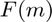 the misfit function for a fixed dataset 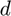 . From Taylor's theorem we know that
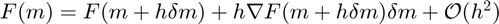
That means that the second order perturbation
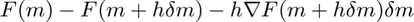 (1)
should be of the same order of magnitude as 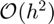 for any model 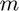 and a small enough perturbation 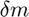 .
To ensure that this is always valid, we generate a random velocity mode, a random perturbation and a random dataset, and then we test the relation
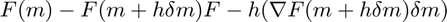 (2)
for varying values of 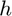 , from 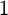 to 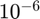 . We also impose that a chosen minimum and maximal value for the velocity of m and of dm, and that the velocity in the boundaries is constant (due to complications in the boundary conditions).
Generate random velocity model
clear flog = fopen('../results/test_gradient_log','w'); % Dimensions % ------------- nv = [31 31 11]; model.nv = nv; dv = [100 100 100]; model.dv = dv; model.ov = [0 0 0]; model.unit = 'm/s'; % % Make up random model % ----------------------- % We make sure that the boundaries of dm are homogeneous (but not zero) % otherwise when extending for the PML the domain we may obtain strange results. % In this example we force the velocity to be 1500 m/s; this is just a % convenient choice that allows smaller PMLs, it could be any other value. % % We also bound the min and max values to make sure that the domain will not % have crazy-high wavelengths. % We let dm to be as large as m a priory, but later we will shrink it. % rng(90085); %This is the random seed! Feel free to change it! min_dm = 1500; max_dm = 4500; tmp = randn(model.nv-2); tmp = (max_dm - min_dm) + (tmp./max(tmp(:)))*min_dm; m = 1500*ones(model.nv); m(2:end-1,2:end-1,2:end-1) = tmp; % % Random perturbation % -------------------- tmp = randn(model.nv-2); tmp = (max_dm - min_dm) + (tmp./max(tmp(:)))*min_dm; dm = 1500*ones(model.nv); dm(2:end-1,2:end-1,2:end-1) = tmp; if strcmp(model.unit,'s2/m2') % Convert now to slowness squared % We want [m+dm] to be [1/(v+dv)^2], and not [1/v^2 + 1/dv^2]!!! m = 1./(m.^2); dm = 1./(m+dm).^2 - m; end
Random data
We choose the magnitude of the data more or less arbitrarily; source estimation is used, so this is not particularly important.
% [xrec yrec zrec xsrc ysrc zsrc freq] acq.nd = [nv(1)-2 nv(2)-2 1 2 2 1 2 ]; acq.dd = [dv(1) dv(2) 1 500 500 1 2 ]; acq.od = [dv(1) dv(2) 2*dv(3) 1000 1000 200 2 ]; min_d = .5*prod(acq.nd(1:3)); max_d = .6*prod(acq.nd(1:3)); acq.data = randn(acq.nd); acq.data = (max_d - min_d) + (acq.data/norm(acq.data(:)))*min_d; [ acq.xrec,acq.yrec,acq.zrec,... acq.xsrc,acq.ysrc,acq.zsrc, acq.freq] = odn2grid(acq.od,acq.dd,acq.nd); acq.sources = speye( prod(acq.nd(4:6)) );
Defining the misfit function
From now on, this will be our misfit function; we create a function handle to hide all the unnecessary parameters. The "setfield" is just to avoid having to write model.v = m+h(i)*dm; before every single call of the function f.
To make sure that the gradient is being computed with maximum accuracy, we do not rescale the model for lower frequencies and we use a direct solver.
opts.par_helm.d = model.dv; opts.par_solver.name = '\'; opts.par_helm.pml_max = 8; f = @(v)(MisfitFD(setfield(model,'v',v),acq,opts,0)); plog(flog,'Computing the misfit f(m)...\n'); [misfit_0, g] = f(m); plog(flog,'=========================================================================\n\n'); gdm = g(:)' * dm(:);
Computing the misfit f(m)... =========================================================================
Testing
The following script performs the test while writing the progress on the screen
h = 10.^([0:-1:-6]); plog(flog,'Initial misfit f(m) = ', misfit_0,'\n'); plog(flog,'Norm of model perturbation ||dm|| = ', norm(dm(:)),'\n'); plog(flog,'Computing the misfit f(m+h*dm)...\n'); for i = 1:length(h) misfit(i) = f(m+h(i)*dm); plog(flog,'Perturbation - |h| = ', h(i),'\n'); plog(flog,'Misfit value - f(m+h*dm) = ', misfit(i),'\n'); error1(i) = abs(misfit(i)-misfit_0); plog(flog,'First order error - |f(m) - f(m+h*dm)| = ', error1(i),'\n'); error2(i) = abs(misfit(i)-misfit_0-h(i)*gdm); plog(flog,'Second order correction - |h*g(m)''*dm| = ', abs(h(i)*gdm),'\n'); plog(flog,'Second order error - |f(m) - f(m+h*dm) - h*g(m)''*dm| = ', error2(i),'\n'); plog(flog,'=========================================================================\n\n'); end plog(flog,'Saving results into files...'); save('test_gradient.mat'); plog(flog,'done!\n');
Initial misfit f(m) = 2.38e+07 Norm of model perturbation ||dm|| = 2.76e+05 Computing the misfit f(m+h*dm)... Perturbation - |h| = 1 Misfit value - f(m+h*dm) = 2.33e+07 First order error - |f(m) - f(m+h*dm)| = 4.44e+05 Second order correction - |h*g(m)'*dm| = 1.14e+05 Second order error - |f(m) - f(m+h*dm) - h*g(m)'*dm| = 3.3e+05 ========================================================================= Perturbation - |h| = 0.1 Misfit value - f(m+h*dm) = 2.37e+07 First order error - |f(m) - f(m+h*dm)| = 6.81e+04 Second order correction - |h*g(m)'*dm| = 1.14e+04 Second order error - |f(m) - f(m+h*dm) - h*g(m)'*dm| = 5.67e+04 ========================================================================= Perturbation - |h| = 0.01 Misfit value - f(m+h*dm) = 2.38e+07 First order error - |f(m) - f(m+h*dm)| = 1.58e+03 Second order correction - |h*g(m)'*dm| = 1.14e+03 Second order error - |f(m) - f(m+h*dm) - h*g(m)'*dm| = 433 ========================================================================= Perturbation - |h| = 0.001 Misfit value - f(m+h*dm) = 2.38e+07 First order error - |f(m) - f(m+h*dm)| = 119 Second order correction - |h*g(m)'*dm| = 114 Second order error - |f(m) - f(m+h*dm) - h*g(m)'*dm| = 4.46 ========================================================================= Perturbation - |h| = 0.0001 Misfit value - f(m+h*dm) = 2.38e+07 First order error - |f(m) - f(m+h*dm)| = 11.5 Second order correction - |h*g(m)'*dm| = 11.4 Second order error - |f(m) - f(m+h*dm) - h*g(m)'*dm| = 0.0441 ========================================================================= Perturbation - |h| = 1e-05 Misfit value - f(m+h*dm) = 2.38e+07 First order error - |f(m) - f(m+h*dm)| = 1.14 Second order correction - |h*g(m)'*dm| = 1.14 Second order error - |f(m) - f(m+h*dm) - h*g(m)'*dm| = 0.000377 ========================================================================= Perturbation - |h| = 1e-06 Misfit value - f(m+h*dm) = 2.38e+07 First order error - |f(m) - f(m+h*dm)| = 0.114 Second order correction - |h*g(m)'*dm| = 0.114 Second order error - |f(m) - f(m+h*dm) - h*g(m)'*dm| = 2.66e-06 ========================================================================= Saving results into files...done!
Results
As previously mentioned, we expect the second order error (1) to behave like 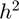 . The following plot clearly shows that the as h decreases, the second order approximation follows the same behaviour (i.e. the lines are more or less parallel).
Likewise, we show the first order error as well. As expected, it behaves like (i.e. the lines are parallel).
plog(flog,'Plotting...\n'); figid = figure; line1 = loglog(h,abs(error1/misfit_0),'linewidth',1); hold all; line2 = loglog(h,h,'linewidth',1); line3 = loglog(h,abs(error2/misfit_0),'linewidth',1); line4 = loglog(h,h.^2,'linewidth',1); legend([line1,line2,line3,line4],{'Zeroth order Taylor Error','O(h)','First order Taylor Error' ... ,'O(h^2)'},'Location','SouthEast'); set(figid,'Position',[0 0 500 500]); xlim([h(end) h(1)]); axis image fclose(flog);
Plotting...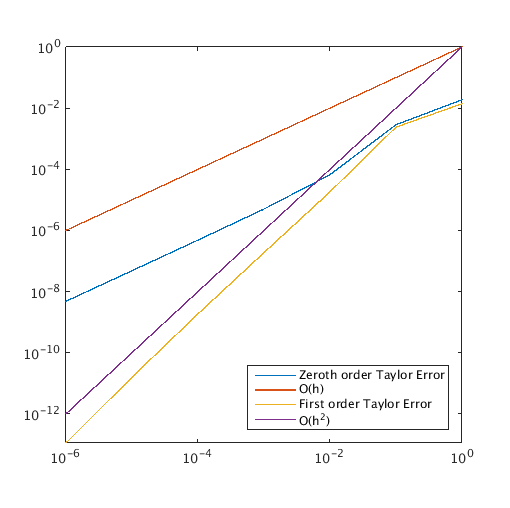